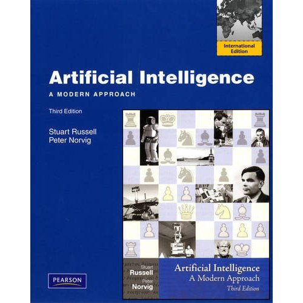

Useful links
- IntelliMEDIA Group, NCSU
- Friday Institute for Educational Innovation, NCSU
- SRI International
- AAA Lab,Stanford
- CSAIL,MIT
- Learning Research and Development Center,University of Pittsburgh
- Institute for Creative Technologies,USC
- Game Developers Conference,2013
Open Courses
Books I'm reading
